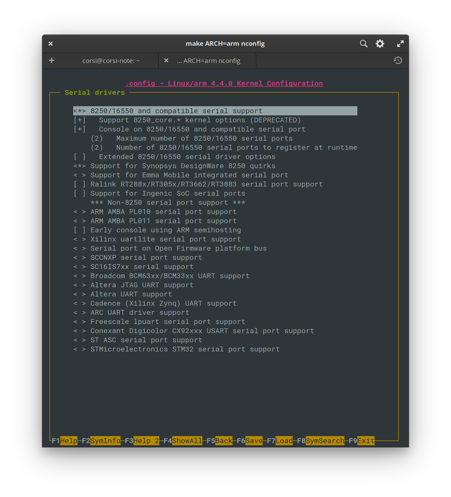

Tutorial - HPS + FPGA - Blink LED¶
Nesse tutorial vamos ver como interfacear o ARM com a FPGA (fabric). Nesse
tutorial, optei por deixar vocês seguirem o tutorial oficial da Terasic:
Examples for using both HPS SoC and FGPA [capítulo 7], que se encontra
no manual do usuário, no CD do kit.
Note
Retomar a essa página quando acabar o tutorial da Terasic, ele não cobre tudo.
Execute
Copie o binário compilado no tutorial HPS_FPGA_LED para o SDCard
Entendendo o HW¶
Muito importante você parar e refletir o que aconteceu, para isso segue algumas perguntas:
- Quais são as interfaces ente o ARM e a FPGA? (são 4 no total)
- Qual a diferença entre elas?
- Como o HPS aparece no Platform Designer (PD)?
- Você abriu as configurações do HPS no PD? O que pode ser configurado?
- Como essa interface é utilizada no Platform Designer?
- Porque no projeto ele utilizou um
clock bridge?
Parte 2¶
Esse tutorial não é completo, ele pula uma coisa muito importante:
-
Como programar a FPGA automaticamente para quando o Linux inicializar, o hardware já estar programando para poder executar o programa
HPS_FPGA_LED. -
Como o Kernel do linux sabe em qual hardware ele está sendo executado? (Possui vídeo? Ethernet? ...)
A programação da FPGA é realizada pelo u-boot, antes da inicialização do
Kernel do Linux. No nosso caso, o u-boot foi pré configurado para ler o arquivo
soc_system.rbf que está na partição do SDCARD junto com o kernel (zImage).
Explicação do processo de boot - até 1:50 minutos
O u-boot antes de inicializar o kernel do Linux, busca esse arquivo na partição do SDCARD, o extraí e programa "magicamente" a FPGA. Nessa mesma partição temos mais dois arquivos: u-boot.scr e socfpga.dtb. O primeiro é um script de inicialização do boot na qual o u-boot lê para saber quais passos ele deve executar (se precisa carregar a fpga, onde está o kernel, ..., são os passos de inicialização), já o socfpga.dtb é o device tree do Linux, o dtb é um binário, que foi criado a partir de outro arquivo, o .dts, e ele contém informações sobre o hardware que é passado para o kernel no momento de inicialização.
Device Tree for Dummies! - Thomas Petazzoni, Free Electrons
Gerando o .rbf (imagem da FPGA)¶
O rbf é o arquivo .sof gerado pelo Quartus na compilação só que comprimido e
com algumas modificações. Para gerar o arquivo .rbf a partir do .sof
basta executarmos na pasta output_files:
Note
Você deve executar esse comando na pasta output_files do seu projeto Quartus!
$ cd output_files
$ quartus_cpf -c DE10_Standard_FB.sof -o bitstream_compression=on soc_system.rbf
Note
note que o arquivo gerado pelo Quartus chama DE10_Standard_FB.sof,
você deve editar para o seu caso.
Com o arquivo soc_system.rbf criado, é só copiarmos ele para o SDCARD,
substituindo o anterior.
Execute
- Gere o
soc_system.rbfdo projeto (COMPILAR O QUARTUS!) - Grave o novo
rbfno SDCard (mesma partição do kernel)
dtb (informações de hardware para o Kernel)¶
O dtb é utilizado como ferramenta para indicar ao kernel quais são as
configurações de hardware disponíveis, você não precisa recompilar o kernel caso
o endereço de memória de algum periférico mudar, basta informar no dts. Essa
ferramenta é muito importante para sistemas embarcados, na qual, cada hardware
possui sua especificidade.
O dtb é gerado a partir de arquivo texto no formato dts que é então gerado
pelas informações de hardware extraída do Platform Designer que são salvas
no arquivo: .sopcinfo, o mesmo arquivo que é utilizado pelo Eclipse-NIOS para
gerar o BSP nos tutoriais passados. O BSP no Linux é chamado de dts e
possui um formato padrão que deve ser seguido!
Será necessário seguir os passos a seguir:
- Gere o
.sopcinfo(platform designer) (já está pronto, não precisa mexer) - Gere o
dts - Compile o
dtsparadtb
Gerando o dts¶
Eu consegui esse comando via trocado com engenheiros da Terasic, os exemplos que encontrava nos tutorias da internet não funcionavam.
Note
Para funcionar é necessário realizar o comando via o shell do embedded
Execute os seguintes comandos:
$ # Devemos executar os comandos dentro do shell do embedded (quartus)
$ embedded_command_shell.sh
$ sopc2dts --input soc_system.sopcinfo --output soc_system.dts --type dts --board soc_system_board_info.xml --board hps_common_board_info.xml --bridge-removal all --clocks
Note
Você deve executar esse comando na pasta raiz do seu projeto Quartus!
Agora com o .dts gerado, vamos dar uma olhada em seu conteúdo e como o
interpretar. O dts possui a anatomia a seguir:

O começo do nosso .dts tem a definição das CPUs que estão
disponíveis no CHIP:
cpus {
#address-cells = <1>;
#size-cells = <0>;
enable-method = "altr,socfpga-smp"; /* appended from boardinfo */
hps_0_arm_a9_0: cpu@0x0 {
device_type = "cpu";
compatible = "arm,cortex-a9-16.1", "arm,cortex-a9";
reg = <0x00000000>;
next-level-cache = <&hps_0_L2>; /* appended from boardinfo */
}; //end cpu@0x0 (hps_0_arm_a9_0)
hps_0_arm_a9_1: cpu@0x1 {
device_type = "cpu";
compatible = "arm,cortex-a9-16.1", "arm,cortex-a9";
reg = <0x00000001>;
next-level-cache = <&hps_0_L2>; /* appended from boardinfo */
}; //end cpu@0x1 (hps_0_arm_a9_1)
}; //end cpus
Vamos ver em mais detalhes o hps_0_uart0 do nosso dts:
hps_0_uart0: serial@0xffc02000 {
compatible = "snps,dw-apb-uart-16.1", "snps,dw-apb-uart";
reg = <0xffc02000 0x00000100>;
interrupt-parent = <&hps_0_arm_gic_0>;
interrupts = <0 162 4>;
clocks = <&l4_sp_clk>;
reg-io-width = <4>; /* embeddedsw.dts.params.reg-io-width type NUMBER */
reg-shift = <2>; /* embeddedsw.dts.params.reg-shift type NUMBER */
status = "okay"; /* embeddedsw.dts.params.status type STRING */
}; //end serial@0xffc02000 (hps_0_uart0)
}; //end serial@0x100020000 (jtag_uart)
Ele indica que no nosso hardware, temos um componente serial no endereço
0xffc02000 que é compatível com os drivers: snps,dw-apb-uart-16.1 e.ou
snps,dw-apb-uart, que é implementado no Driver: 8250 no kernel do Linux:
https://github.com/torvalds/linux/blob/master/drivers/tty/serial/8250/8250_dw.c.
E esse driver está configurado como ativo no nosso kernel:

E é por conta disso que conseguimos acessar o kit com USB (screen).
Parâmetro CONFIG_SERIAL_8250_CONSOLE
CONFIG_SERIAL_8250_CONSOLE: │
│ │
│ If you say Y here, it will be possible to use a serial port as the │
│ system console (the system console is the device which receives all │
│ kernel messages and warnings and which allows logins in single user │
│ mode). This could be useful if some terminal or printer is connected │
│ to that serial port. │
│ │
│ Even if you say Y here, the currently visible virtual console │
│ (/dev/tty0) will still be used as the system console by default, but │
│ you can alter that using a kernel command line option such as │
│ "console=ttyS1". (Try "man bootparam" or see the documentation of │
│ your boot loader (grub or lilo or loadlin) about how to pass options │
│ to the kernel at boot time.) │
│ │
│ If you don't have a VGA card installed and you say Y here, the │
│ kernel will automatically use the first serial line, /dev/ttyS0, as │
│ system console. │
│ │
│ You can set that using a kernel command line option such as │
│ "console=uart8250,io,0x3f8,9600n8" │
│ "console=uart8250,mmio,0xff5e0000,115200n8". │
│ and it will switch to normal serial console when the corresponding │
│ port is ready. │
│ "earlycon=uart8250,io,0x3f8,9600n8" │
│ "earlycon=uart8250,mmio,0xff5e0000,115200n8". │
│ it will not only setup early console. │
│ │
│ If unsure, say N. │
│ │
│ Symbol: SERIAL_8250_CONSOLE [=y] │
│ Type : boolean │
│ Prompt: Console on 8250/16550 and compatible serial port
│ Location: │
│ -> Device Drivers │
│ -> Character devices │
│ -> Serial drivers │
│ -> 8250/16550 and compatible serial support (SERIAL_8250 [=y]) │
│ Defined at drivers/tty/serial/8250/Kconfig:60 │
│ Depends on: TTY [=y] && HAS_IOMEM [=y] && SERIAL_8250 [=y]=y │
│ Selects: SERIAL_CORE_CONSOLE [=y] && SERIAL_EARLYCON [=y] │
│
Para mais informações sobre o dts:
Gerando o dtb¶
Execute os seguintes comandos (ainda dentro do embedded shell)
$ dtc -I dts -O dtb -o soc_system.dtb soc_system.dts
$ #Agora você pode sair do embedded shell:
$ exit
Execute
- Gere o
soc_system.dtbdo projeto - Grave o novo
soc_system.dtbno SDCard (mesma partição do kernel)
Testando¶
Agora plugue o SDcard no kit de desenvolvimento, e após inicialização do kernel
execute o programa blink led e veja os LEDs da FPGA piscarem!
Interessante né? Agora vamos fazer algo mais útil com isso..